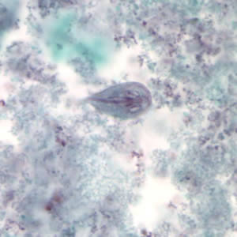
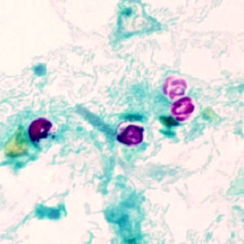

Tiny parasites. Big stomach trouble.
Giardia and Cryptosporidium are single-celled intestinal parasites found in the U.S. and worldwide.

CDC / DPDx — Melanie Moser · Public domain

CDC / DPDx · Public domain
Giardia
Its active form has two nuclei that can look like a face. It attaches to the small intestine; its tough cyst stage travels between hosts. Infection can cause diarrhea, gas, greasy stools, and poor absorption of nutrients. Swallowing contaminated water, food, or material from hands can transmit it.
Cryptosporidium (“Crypto”)
This parasite spreads through swallowed oocysts, often in contaminated recreational water, drinking water, or through contact with people or animals. It can cause prolonged watery diarrhea. Its chlorine tolerance helps explain why a properly chlorinated pool is not a guarantee against Crypto.
At the laboratory bench
Stool testing may use antigen detection, fluorescent antibodies, molecular tests, or microscopy. Special stains can highlight Crypto oocysts. The specimen and test method matter: a routine test does not detect every parasite.
Treatment depends on which one
For Giardia, medicines such as tinidazole, metronidazole, or nitazoxanide may be used. For Crypto, hydration is central; many otherwise healthy people recover, and nitazoxanide is an option for people aged one year and older with healthy immune systems. Weakened immunity changes treatment and risk.
Could someone spread Crypto after feeling better?
Yes. CDC advises staying out of swimming water for two weeks after diarrhea has completely stopped if you have Crypto.
Sources & further exploration
- CDC · Giardia and laboratory identification
- CDC · Cryptosporidium and laboratory identification
- CDC · Giardia treatment
- CDC · Cryptosporidium clinical care
Educational content reviewed October 4, 2026. Photographs show real specimens or research observations; stains and imaging methods affect their appearance. CDC images are available free from CDC. Their use does not imply endorsement by CDC, HHS, or the U.S. Government.